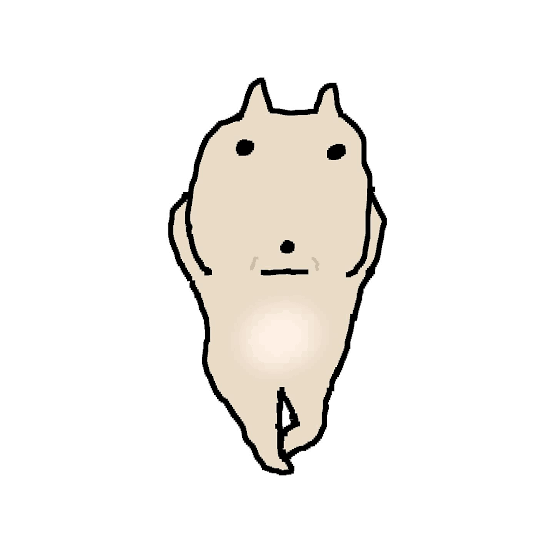

I'm Chloe, and I'm from Connecticut, and my parents are Taiwanese. I wanted to join digital fabrication because since I was a child, I always liked to make things with my hands. The goal for me in this class is to go beyond that, and incorperate something visually appealing while making it functional.